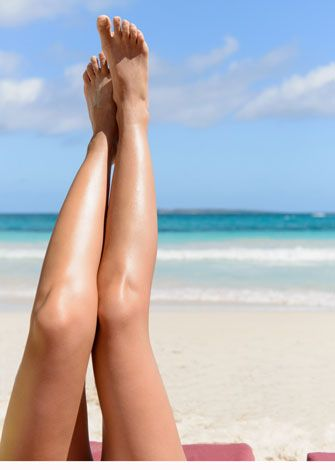
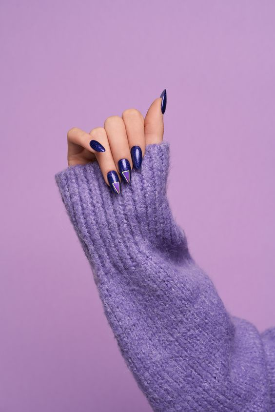

Cuidados post
Depilacion definitiva
-
Evitar la exposición al sol, si la exposición es inevitable, deben utilizar protector solar (SPF 30 o mayor) o pantalla solar 2 a 3 veces al día como mínimo (este cuidado debe considerarse durante todo el tratamiento).
-
No exponer la zona depilada a solarium por 2 semanas previo y posterior a la sesión láser
-
Mantener el área tratada limpia y seca, por lo menos 6 horas post sesión, ya que los poros estarán abiertos.
-
No aplicar cremas, desodorantes o lociones, si su composición tiene alcohol (por 6 horas), ya que puede tapar los poros y causar complicaciones en la zona.
-
Muy importante respetar y cumplir con exactitud los tiempos de intervalos entre cada sesión, para que así, puedas ver los resultados que esperas en el tiempo deseado.
Body up, Mio Up y Vela slim
-
Mantener la frecuencia semanal de repetición del tratamiento para un mejor resultado.
-
Acompañar el tratamiento con actividad física (musculación, fitness, crossfit, etc.).
-
Mantener hábitos alimenticios acordes si además se busca reducción de panículo adiposo.
-
Una vez realizada la sesión es recomendable la aplicación de productos reafirmantes para ayudar al trabajo del aspecto de la piel.
Cuidados post Esmaltado
-
Evita el contacto directo de productos corrosivos como detergentes agresivos, lejías, etc. De este modo el esmalte será más duradero y tus uñas se mantendrán perfectas durante más tiempo.
-
Aplica productos hidratantes en las cutículas, para evitar que las uñas se resequen y para que queden suaves y flexibles.
-
Cuando vayas a utilizar productos químicos o de limpieza, recuerda siempre utilizar guantes.
